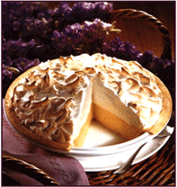

Grandma's Lemon Meringue Pie

- One 9-inch pie
- 30 Min - Prep time
- 10 Min - Cook time
- 40 Min - Total
- 8 Servings
INGREDIENTS
- 1 cup white sugar
- 2 tablespoons all-purpose flour
- 3 tablespoons cornstarch
- 1/4 teaspoon salt
- 1 1/2 cups water
- 2 lemons, juiced and zested
- 2 tablespoons butter
- 4 egg yolks, beaten
- 1 (9 inch) pie crust, baked
- 4 egg whites
- 6 tablespoons white sugar
DIRECTIONS
- Preheat Oven: Preheat oven to 350 degrees F (175 degrees C).
- Make Lemon Filling: In a medium saucepan ...
- Whisk together 1 cup sugar, flour, cornstarch, and salt.
- Stir in water, lemon juice and lemon zest.
- Cook over medium-high heat, stirring frequently, until mixture comes to a boil.
- Stir in butter.
- Place egg yolks in a small bowl and gradually whisk in 1/2 cup of hot sugar mixture
- Bring to a boil and continue to cook while stirring constantly until thick.
- Remove from heat.
- Pour filling into baked pastry shell.
USER COMMENTS
This is a very fun recipe to follow, because Grandma makes it sweet and simple. This pie is thickened with cornstarch and flour in
addition to egg yolks, and contains no milk
- Emilie S.
Q: What do you call an ape who loves pie?
A: A meringue-utan.
- Vickie K.LINKS
LINKS
Search for other lemon meringue pie recipesHome